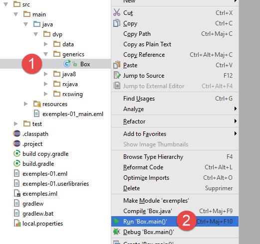

3. Signaturen generischer Klassen und Methoden
 |
Die RxJava-Bibliothek verfügt über viele Methoden, die Instanzen generischer Schnittstellen als Parameter akzeptieren. Manchmal sind ihre Signaturen komplex. Hier sind einige Beispiele:
public final <R> Observable<R> map(Func1<? super T,? extends R> func)
public final <R> Observable<R> flatMap(Func1<? super T,? extends Observable<? extends R>> func)
Diese beiden Methoden verwenden zwei generische Typen, T und R. Aber was bedeutet beispielsweise die Parameterdefinition der map-Methode: Func1<? super T,? extends R> func ?
Informationen zu Generika finden Sie unter der URL [https://docs.oracle.com/javase/tutorial/java/generics/]. Einige der folgenden Informationen stammen aus dieser URL. Generika wurden in Java Version 1.5 eingeführt.
Stellen wir uns einen Webdienst vor, der Informationen verschiedener Typen bereitstellt. Der Webdienst kann manchmal bei der Bereitstellung dieser Informationen fehlschlagen und muss dann seinem Client einen Fehler melden. Wir können die Antwort des Webdienstes dann in der folgenden Form standardisieren:
public class Response<T> {
// ----------------- properties
// operation status
private int status;
// any error messages
private List<String> messages;
// the body of the reply
private T body;
...
}
- Zeile 1: Die Klasse [Response] wird durch den Typ T parametrisiert;
- Zeile 9: Der Typ T ist der Typ des Antwortkörpers, also das, was der Client tatsächlich erwartet;
- Zeile 5: ein Fehlercode, 0, wenn kein Fehler vorliegt;
- Zeile 7: Meldungen, die den Fehler erklären, null, wenn kein Fehler vorliegt;
Auf der Client-Seite können wir dann schreiben:
Response<Product> product=getDataFromWebService(...) ;
oder
Response<List<Product>>=getDataFromWebService(...) ;
Der formale Typ T wird durch einen tatsächlichen Typ ersetzt, hier [Product] oder [List<Product>]. Die generische Klasse [Response<T>] ist hier nützlich, da sie es uns ermöglicht, mit einer Standardantwort zu arbeiten.
Um einen [Response]-Typ mit dem new-Operator zu erstellen, schreiben wir:
Response<List<Product>> response=new Response<List<Product>> (...) ;
Seit Java Version 1.8 lässt sich die obige Anweisung einfacher schreiben:
Response<List<Product>> response=new Response<> (...) ;
Es ist nicht mehr erforderlich, den tatsächlichen Typ der generischen Parameter auf der rechten Seite des Gleichheitszeichens anzugeben: Stattdessen wird der auf der linken Seite des Gleichheitszeichens angegebene formale Typ verwendet. Dies wird als Typinferenz bezeichnet: Der Compiler ist in der Lage, den tatsächlichen Typ der generischen Parameter anhand des Kontexts selbst zu ermitteln. Diese Funktion wird häufig in Lambda-Funktionen verwendet, wo der tatsächliche Typ der generischen Parameter einer Methode oft weggelassen wird.
Auf der Client-Seite könnte die Methode [getDataFromWebService] nun die folgende Signatur haben:
<T1,T2> Response<T1> getDataFromWebService(String urlWebService, String httpMethod, T2 post)
Hier haben wir eine generische Methode, die durch zwei Typen, T1 und T2, parametrisiert ist:
- T1 ist der Typ des erwarteten Antwortkörpers;
- T2 ist der Typ des Wertes, der bei einer POST-Operation gesendet wird, bei einer GET-Operation ist er null;
- urlWebService: ist die URL des Webdienstes;
- httpMethod: ist die HTTP-Methode GET oder POST, die bei der Abfrage dieser URL verwendet werden soll;
Auf der Client-Seite könnte der folgende Aufruf erfolgen:
Long id=... ;
Response<Product> product=this.<Product,Long>getDataFromWebService('http://localhost:8080/rest/product','POST',id) ;
In diesem Fall haben wir T1=Product und T2=Long.
Mit Java 8 können wir die Typinferenz nutzen und den Code einfacher schreiben:
Long id=... ;
Response<Product> product=getDataFromWebService('http://localhost:8080/rest/product','POST',id) ;
Hier ist ein weiterer möglicher Aufruf:
Long[] ids=... ;
Response<List<Product>> product=getDataFromWebService('http://localhost:8080/rest/products','POST',ids) ;
In diesem Fall haben wir T1=List<Product> und T2=Long[].
Die generische Klasse oder Methode kann Einschränkungen für ihre generischen Parameter festlegen. Schauen wir uns noch einmal die Definition der [map]-Methode in RxJava an:
public final <R> Observable<R> map(Func1<? super T,? extends R> func)
Die Methode nimmt zwei Parametertypen entgegen, T und R. Der Typ [Func1] ist eine generische Schnittstelle:
 |
Func1 definiert eine funktionale Schnittstelle, d. h. eine Schnittstelle mit einer einzigen Methode. Funktionale Schnittstellen bilden die Grundlage für Lambda-Ausdrücke in Java 8. Hier ist die Methode der Schnittstelle wie folgt definiert:
T ist also der Typ des an [call] übergebenen Parameters und R ist der Typ des erhaltenen Ergebnisses. Kehren wir zur Definition der [map]-Methode zurück:
public final <R> Observable<R> map(Func1<? super T,? extends R> func)
- Die Methode [map] erwartet einen einzelnen Parameter vom Typ [Func1<? super T,? extends R>] und gibt einen Typ [Observable<R>] zurück;
- ? super T: Der an die Methode [Func1.call] übergebene Parameter muss vom Typ T oder einem Supertyp von T sein;
- ? extends R: Der Typ des von der Methode [call] zurückgegebenen Ergebnisses muss vom Typ R oder einem Subtyp sein, wenn R eine Klasse ist, oder R implementieren, wenn R eine Schnittstelle ist;
Um die beiden oben genannten Einschränkungen besser zu verstehen, sehen wir uns Beispiele aus der Referenz [https://docs.oracle.com/javase/tutorial/java/generics/bounded.html] an:
package tests;
public class Box<T> {
private T t;
public void set(T t) {
this.t = t;
}
public T get() {
return t;
}
public <U extends Number> void inspect(U u) {
System.out.println("T: " + t.getClass().getName());
System.out.println("U: " + u.getClass().getName());
}
public static void main(String[] args) {
Box<Integer> integerBox = new Box<>();
integerBox.set(new Integer(10));
integerBox.inspect(new Long(20));
integerBox.inspect(new Double(-1.78));
//integerBox.inspect("some text"); // error: this is still String!
}
}
- Zeile 3: Die Klasse [Box] ist durch den Typ T parametrisiert, der dem Typ des Feldes in Zeile 5 entspricht;
- Zeile 15: Die Methode [inspect] nimmt einen Parameter vom Typ U entgegen. Eine Methode kann auch generische Parameter haben. Sie wird dann wie folgt deklariert:
Hier wird U als generischer Typ der Methode mit <U> deklariert, jedoch mit der Einschränkung <U extends Number>, d. h., U muss die Klasse [Number] erweitern. Aufgrund dieser Einschränkung meldet der Compiler in Zeile 25 einen Fehler;
- Zeilen 23–24: Aufrufe der Methode [inspect] mit von [Number] abgeleiteten Typen;
Es werden folgende Ergebnisse erhalten:
Hinweis: Um die Klasse in IntelliJ auszuführen, führen Sie die folgenden Schritte aus [1, 2]:
 |
Betrachten Sie nun das folgende Beispiel:
public void addNumbers(List<? super Integer> list) {
for (int i = 1; i <= 3; i++) {
list.add(i);
}
}
Die Methode [addNumbers] nimmt eine List<T> als Parameter entgegen, wobei T eine Oberklasse der Klasse [Integer] ist. Aufgrund dieser Einschränkung können die Ganzzahlen 1 bis 3 zur Liste hinzugefügt werden (Zeilen 2–4), und die Methode könnte wie folgt aufgerufen werden:
List<Number> numbers=new ArrayList<>();
// ajout double Number <-- Double
numbers.add(7.8);
// ajout Long Number <-- Long
numbers.add(1L);
// ajout List<Number> Number <-- Integer
addNumbers(numbers);
// affichagede List<Number>
for(Number number : numbers){
System.out.println(number.getClass().getName());
}
Dies führt zu folgendem Ergebnis:
Um die Klasse Box<T> zu erweitern, würden wir schreiben:
class OtherBox<T> extends Box<T> {
}
Die Unterklasse kann selbst neue generische Parameter einführen:
class AnotherBox<T, T1> extends Box<T> {
void consumer(T1 t1) {
System.out.printf("%s%n", t1);
}
}
Eine Schnittstelle kann auch generische Parameter verwenden:
interface I<T> {
void doSomethingWith(T t);
}
Verwenden Sie zur Implementierung die folgende Syntax:
class A<T> implements I<T> {
@Override
public void doSomethingWith(T t) {
System.out.printf("%s%n", t);
}
}
Wir wissen nun genug über Generika, um uns mit Lambda-Funktionen zu befassen.